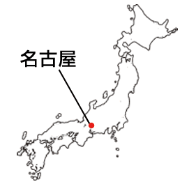
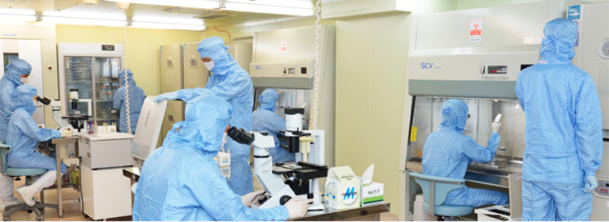
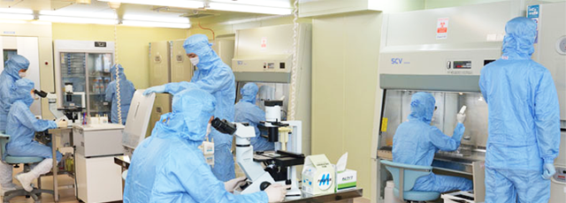

简体中文
简体中文


内藤メディカルクリニック理事長内藤康弘が免疫細胞療法（免疫療法）を始めて約20年。
住友記念病院（愛知県名古屋市）にて当院の免疫療法の治療スタイルの前身となる「内藤式代謝療法」をスタートさせました。
2002年にがん免疫細胞療法専門クリニックとして、「内藤メディカルクリニック」を設立。
治療開始当時から数多くの患者さんが来院し、数多くの症例を診てきました。
全国各地から多くの問い合わせがあり、現在では全国の都道府県で当院と同じがん免疫細胞療法を受けることが可能です。
人間の持つ素晴らしい潜在能力を最大限に生かし、がん細胞を直接攻撃するNK細胞を強化、増加させる活性NK細胞療法や新樹状細胞ワクチン療法、ガンマ・デルタT細胞療法を行っています。
車や電車（公共交通機関）などでのアクセスも非常に便利良い名古屋で免疫細胞療法が受けられます。
2022年に「名古屋メディカルクリニック」と名称を変更しました。

診療時間・休診日について
| 時間 | 月 | 火 | 水 | 木 | 金 | 土 | 日 |
|---|---|---|---|---|---|---|---|
| 午前8時30分～12時30分 | ○ | ○ | ○ | ○ | ○ | ○ | － |
完全予約制
受付平日8時15分～16時15分土曜12時迄
日祝休み


再生医療等安全性確保法（平成26年11月25日施行）の施行に伴い、特定細胞培養加工物の製造届出が受理された施設です。
届出日：平成27年1月16日
番号：FC4140001